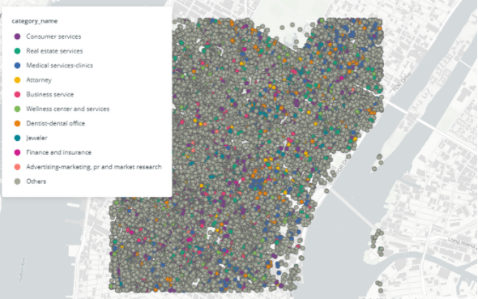

For my final project I studied how socidemographic factors relate to indexed spend scores for
retailers at the census block level in Manhattan. Being able to predict spend at such a granular
level could be useful for real estate analysts evaluating site selection options for a retailer among
other analyses.
| Model Type | Features | R-Squred Train | R-Squared Test |
|---|
Random Forest certainly performed better than Multiple Regression. However, Due to the fact that the model with
all of the features (165) had the same r-sqaured as the model with only the top feature it is clear that the top
feature (geo_id) explains almost all of the variance in the Mastercard retail spend index score. Thus, we conclude that
sociodemographic data in a census block group is not a good predictor of spend within that block group for these models.
Proposed steps include: thoroughly go through features and remove outliers from sociodemographic data and
rerun models, try different supervised learned algorithms, and use the same algorithms, but with different
features (ex: Points of Interest (POIs)
